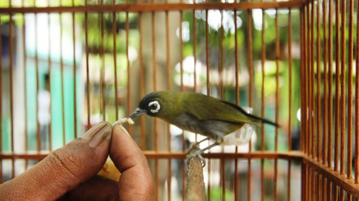

Pengenalan Burung Pleci
Burung Pleci (Goniorhynchus goniorhynchus) adalah salah satu jenis burung kecil yang populer di Indonesia karena suaranya yang merdu dan penampilannya yang menarik. Burung ini biasanya memiliki ukuran tubuh kecil dengan warna-warna cerah seperti hijau dan kuning.

Pakan Burung Pleci
Untuk menjaga kesehatan burung Pleci, pemberian pakan yang tepat sangat penting. Beberapa jenis pakan yang direkomendasikan meliputi:
- Buah-buahan: Pisang, apel, dan pepaya adalah pilihan yang baik.
- Serangga: Jangkrik dan ulat hongkong dapat memberikan protein yang diperlukan.
- Pakan khusus: Pakan burung Pleci yang tersedia di toko hewan peliharaan juga dapat diberikan.
Selalu pastikan pakan segar dan bebas dari kontaminasi.
Kebersihan Kandang
Kebersihan kandang adalah faktor penting dalam merawat burung Pleci. Beberapa langkah yang perlu diikuti adalah:
- Membersihkan kandang: Bersihkan kandang secara rutin, setidaknya seminggu sekali, untuk menghindari penumpukan kotoran.
- Menjaga kebersihan peralatan: Cuci mangkuk pakan dan minum dengan sabun dan air bersih.
- Periksa kesehatan: Selalu periksa burung untuk memastikan tidak ada tanda-tanda penyakit atau infeksi.
Tips Perawatan Burung Pleci
Berikut adalah beberapa tips tambahan untuk menjaga burung Pleci tetap sehat dan bahagia:
- Tempatkan di lokasi yang nyaman: Pastikan kandang berada di tempat yang tenang dan tidak terkena sinar matahari langsung.
- Berikan waktu bermain: Berikan mainan atau rangsangan mental untuk menghindari kebosanan.
- Perhatikan pola makan: Jangan memberi makanan berlebihan; ikuti panduan pakan yang sesuai.